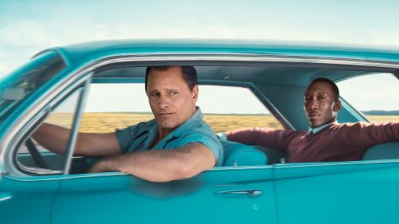

Opis filmu Green Book
Film Petera Farrelly'ego opowiada o niezwykłej relacji, którą nawiązują drobny cwaniaczek z Bronxsu i światowej sławy muzyk. Tony (Viggo Mortensen) i Don Shirley (Mahershal Ali) poznają się, kiedy ten pierwszy odpowiada na ogłoszenie o pracę w roli szofera ekstrawaganckiego artysty.
